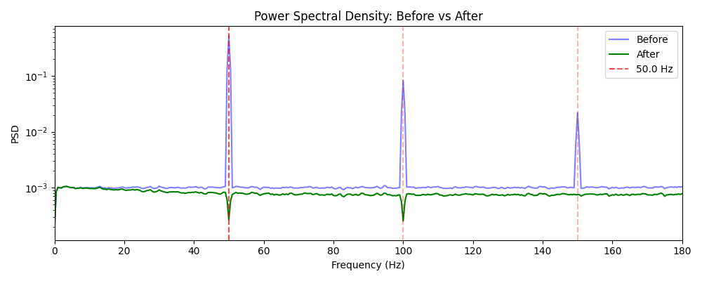
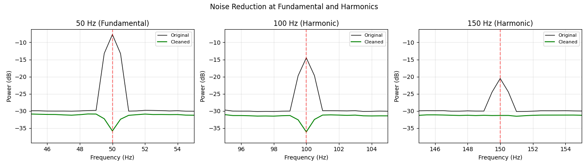

Note
Go to the end to download the full example code.
ZapLine-plus: Advanced Settings and Features#
This example demonstrates the advanced features of Zapline-plus: 1. Harmonic Processing: Auto-detect and remove harmonics (2f, 3f, …) 2. Hybrid Fallback: Notch filter cleanup when ZapLine struggles 3. Topography Outputs: Per-chunk spatial patterns of removed artifacts 4. Chunk Metadata: Detailed per-segment cleaning information
# Authors: Sina Esmaeili <sina.esmaeili@umontreal.ca>
import matplotlib.pyplot as plt
import numpy as np
from scipy import signal
from mne_denoise.viz.zapline import plot_psd_comparison
from mne_denoise.zapline import ZapLine
from mne_denoise.zapline.adaptive import detect_harmonics
Simulate Data with Harmonics#
Create a signal with fundamental (50 Hz) plus two harmonics (100, 150 Hz).
print("=== ZapLine-plus Advanced Features Demo ===\n")
sfreq = 500 # High enough to capture harmonics
n_ch = 32
duration = 60
n_times = int(duration * sfreq)
times = np.arange(n_times) / sfreq
rng = np.random.RandomState(42)
# Brain signal (pink noise)
brain = rng.randn(n_ch, n_times) * 0.5
# Line noise with harmonics
fundamental = 50.0
harmonics = [100.0, 150.0] # 2f, 3f
# Create spatial topographies for each frequency
topos = []
for i in range(3):
topo = rng.randn(n_ch)
topo /= np.linalg.norm(topo)
topos.append(topo)
# Add noise at each frequency
noise = np.zeros((n_ch, n_times))
freqs = [fundamental] + harmonics
amplitudes = [5.0, 2.0, 1.0] # Decreasing amplitude for harmonics
for freq, amp, topo in zip(freqs, amplitudes, topos):
ts = np.sin(2 * np.pi * freq * times) * amp
noise += np.outer(topo, ts)
data = brain + noise
print(f"Data: {n_ch} channels × {n_times} samples ({duration}s)")
print(f"Frequencies: {freqs} Hz with amplitudes {amplitudes}")
=== ZapLine-plus Advanced Features Demo ===
Data: 32 channels × 30000 samples (60s)
Frequencies: [50.0, 100.0, 150.0] Hz with amplitudes [5.0, 2.0, 1.0]
Step 1: Detect Harmonics#
The detect_harmonics function explicitly finds harmonics present in data.
print("\n--- Step 1: Harmonic Detection ---")
detected = detect_harmonics(data, sfreq, fundamental)
print(f"Fundamental: {fundamental} Hz")
print(f"Detected harmonics: {detected}")
--- Step 1: Harmonic Detection ---
Fundamental: 50.0 Hz
Detected harmonics: [100.0, 150.0]
Step 2: Apply ZapLine-plus with Harmonic Processing#
Enable process_harmonics=True to automatically clean harmonics.
print("\n--- Step 2: ZapLine-plus with Harmonics ---")
zapline = ZapLine(
sfreq=sfreq,
line_freq=None, # Auto-detect
adaptive=True,
adaptive_params={
"process_harmonics": True,
"max_harmonics": 3,
"hybrid_fallback": True,
"fmin": 45,
"fmax": 55,
},
)
cleaned = zapline.fit_transform(data)
result = zapline.adaptive_results_
data_clean = result["cleaned"]
print("Cleaning complete!")
print(f"Chunk info entries: {len(result['chunk_info'])}")
# print(f"Topography entries: {len(result['removed_topographies'])}")
--- Step 2: ZapLine-plus with Harmonics ---
/home/runner/work/mne-denoise/mne-denoise/mne_denoise/zapline/core.py:438: UserWarning: sfreq/line_freq = 3.33 is not close to an integer. Smoothing will use period=3 samples.
data_smooth, data_residual = self._get_smooth_residual(data, warn=True)
Cleaning complete!
Chunk info entries: 5
Step 3: Examine Per-Chunk Metadata#
The chunk_info contains detailed information for each segment processed.
print("\n--- Step 3: Chunk Metadata ---")
for i, info in enumerate(result["chunk_info"]):
print(f"Chunk {i + 1}:")
print(f" Frequency: {info['fine_freq']:.2f} Hz")
print(f" Time range: {info['start'] / sfreq:.1f}s - {info['end'] / sfreq:.1f}s")
print(f" Components removed: {info['n_removed']}")
print(f" Artifact present: {info['artifact_present']}")
--- Step 3: Chunk Metadata ---
Chunk 1:
Frequency: 50.00 Hz
Time range: 0.0s - 30.0s
Components removed: 5
Artifact present: True
Chunk 2:
Frequency: 50.00 Hz
Time range: 30.0s - 60.0s
Components removed: 5
Artifact present: True
Chunk 3:
Frequency: 99.98 Hz
Time range: 0.0s - 60.0s
Components removed: 5
Artifact present: True
Chunk 4:
Frequency: 149.95 Hz
Time range: 0.0s - 30.0s
Components removed: 2
Artifact present: False
Chunk 5:
Frequency: 149.95 Hz
Time range: 30.0s - 60.0s
Components removed: 0
Artifact present: False
Step 4: Visualize Removed Topographies#
Access spatial patterns of removed noise components per chunk.
print("\n--- Step 4: Topography Outputs ---")
# (To support this, we would need to store `est.patterns_` from each chunk pass)
--- Step 4: Topography Outputs ---
Step 5: Compare Spectra#
Visualize noise reduction at fundamental and harmonics.
print("\n--- Step 5: Spectral Comparison ---")
# Use our reusable viz function for a quick overview
plot_psd_comparison(data, data_clean, sfreq, line_freq=fundamental, fmax=180, show=True)
# Detailed per-frequency comparison
fig, axes = plt.subplots(1, 3, figsize=(14, 4))
for i, (freq, ax) in enumerate(zip(freqs, axes)):
f_o, psd_o = signal.welch(data, fs=sfreq, nperseg=int(sfreq * 2), axis=-1)
f_c, psd_c = signal.welch(data_clean, fs=sfreq, nperseg=int(sfreq * 2), axis=-1)
psd_o_mean = np.mean(10 * np.log10(psd_o + 1e-20), axis=0)
psd_c_mean = np.mean(10 * np.log10(psd_c + 1e-20), axis=0)
ax.plot(f_o, psd_o_mean, "k-", label="Original", lw=1)
ax.plot(f_c, psd_c_mean, "g-", label="Cleaned", lw=1.5)
ax.set_xlim(freq - 5, freq + 5)
ax.axvline(freq, color="r", ls="--", alpha=0.5)
ax.set_xlabel("Frequency (Hz)")
ax.set_ylabel("Power (dB)")
ax.set_title(f"{int(freq)} Hz {'(Fundamental)' if i == 0 else '(Harmonic)'}")
ax.legend(fontsize=8)
ax.grid(True, alpha=0.3)
plt.suptitle("Noise Reduction at Fundamental and Harmonics")
plt.tight_layout()
plt.show()
- 
- 
--- Step 5: Spectral Comparison ---
Step 6: Hybrid Fallback Demo#
When ZapLine alone can’t clean fully, hybrid_fallback applies a notch.
print("\n--- Step 6: Quantitative Results ---")
# Calculate noise power reduction
for freq in freqs:
mask = (f_o > freq - 0.5) & (f_o < freq + 0.5)
pow_o = np.mean(psd_o[:, mask])
pow_c = np.mean(psd_c[:, mask])
reduction_db = 10 * np.log10(pow_o / max(pow_c, 1e-20))
print(f"{int(freq):>3} Hz: {reduction_db:.1f} dB reduction")
print("\n[OK] Advanced features demo complete!")
--- Step 6: Quantitative Results ---
50 Hz: 32.9 dB reduction
100 Hz: 25.2 dB reduction
150 Hz: 14.7 dB reduction
[OK] Advanced features demo complete!
Total running time of the script: (0 minutes 3.583 seconds)